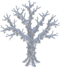
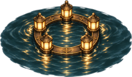
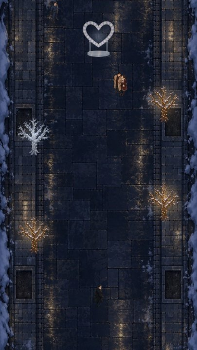

プレイヤーの行為はただひとつ、照明の工作。制御盤や電飾に近づいて工作ボタンを押すと、暖色の電飾が事務的な蛍光白に変わるか、一部が消灯する。ロマンチックだった風景が、数秒ごとに市役所の廊下のような景色へ置き換わっていく。

この「暖色 → 冷白」がゲームの主題であり、配色システムそのものでもある。HUDのムードゲージも、50%を切ると金色から蛍光白に切り替わる。BGMも工作が進むほど楽器が減り、最後は無機質な点検音だけになる。
画面上のボタンを増やさないため、工作の種類は選ばせない。対象ごとに実行される工作内容が決まっているので、プレイヤーは「どの工作を選ぶか」ではなく「どの順番でどこを工作するか」だけを考える。
| 操作 | スマートフォン | PC |
|---|---|---|
| 移動 | 画面左半分を押したままドラッグ（押した位置が原点のバーチャルスティック） | WASD ／ 矢印キー |
| 工作 | 画面右半分をタップ | スペースキー |
| 一時停止 | 左上のボタン | P ／ Esc |
| リトライ | 失敗画面の「もう一度」 | R |
対象が複数あるときは、向いている方向・距離・ムード減少量の重み付けで1つに絞る。工作ボタンを押すと 0.22秒かけて対象の横へ自動で位置合わせしてから作業に入るので、少しのズレで失敗することがない。工作中に移動入力を入れると中断できる（ペナルティなし、進捗のみリセット）。
100%から始まり、工作のたびに対象ごとの数値だけ減る。0%でミッションクリア。ステージには必要量より多くの対象が置いてあるので、どこを飛ばしてどこを拾うかというルート選択が生まれる。
警備員と監視カメラの視線に入るとゲージが増える。一瞬見られただけで終わる設計にはしていない。什器や人混みは視線を遮る。
工作成功から5秒以内に次を決めると継続。スコア倍率がそのまま倍数になり、3連鎖以上で工作時間が0.84倍に短縮される。効果音のピッチも段階的に上がる。
カップルの頭上でハートが膨らんだ前後1.0秒に工作を決めると成立。JUST SABOTAGE +500 と表示され、0.16秒のスローと専用SEが入る。デート演出の直前を狙う遊びが、ここで初めて生まれる。
| 項目 | 計算 |
|---|---|
| 工作スコア | 対象ごとのスコア × コンボ数 |
| ジャスト妨害 | +500（1回ごと） |
| タイムボーナス | 残り時間 × 50（クリア時） |
| ランク | 合計スコアをステージ別しきい値で S / A / B / C に判定 |
| 称号 | 条件 |
|---|---|
| 聖夜の経費削減担当 | Sランク |
| ロマンス停電主任 | ジャスト妨害 3回以上 |
| ムード破壊一級 | 最大コンボ 5以上 |
| 平日化スペシャリスト | 45秒以内にクリア |
| 照明設備の敵 | 発見寸前の回避 3回以上 |
| 見習い工作員 | 上記以外 |
結果画面には クリアタイム／最大コンボ／ジャスト妨害数／発見寸前の回避数／スコア／ランク／称号 を表示。「もう一度」は1タップで即再開、確認ダイアログもロードも挟まない。
カップルが「撮るよ」「3、2、1」と構えたら、対象の上にタイミングバーが出る。赤い帯が受付、金の線が基準時刻。 緑の▲は今から押したら工作が完了する位置で、吸着0.22秒・工作時間・コンボ短縮を織り込んである。帯の中で▲が止まれば間に合う。
狙って待つとコンボが切れる、という不合理をなくすため、対象ごとに1プレイ1回だけコンボ時計を止められる。 制限時間・発見ゲージ・イベントは止まらない。離れて戻っても回復しない。切れたコンボは復活しない。
工作に成功すると、300px以内の巡回警備員が1人だけ故障確認に向かう。 反応0.45秒 → 対象へ移動 → 現地確認1.8秒 → 元の巡回位置へ復帰 → 4秒のクールダウン。 手前の照明を落として警備員を引き、空いた経路で奥の大型対象を狙う、という組み立てができる（ステージ2以降）。
経路は什器を避けて生成し、作れない対象は誘導対象にしない。プレイヤーを直視している警備員は誘導されない。待ち行列も作らない。
ムードが0になった瞬間に得点と記録を確定して保存し、演出はそのあとに1.8秒だけ流す。 1.2秒で本部から「平常運転を確認」。0.25秒を過ぎれば新しいタップでスキップできる。 演出中に失敗へ落ちることはなく、未工作の照明が勝手に消えることもない。
全ステージ合わせて 56個 の工作対象を配置している。ステージ1だけムード倍率1.5を掛け、6〜7回の工作でクリアできる。素材は点灯状態の1枚だけを持ち、工作後の見た目（冷白色化／消灯）はゲーム側で合成している。

数値は game.js の SAB をそのまま記載。バーは大型ツリー（−20%）を最大とした相対量。工作時間が長い対象ほどムード減少量とスコアが大きく、その間の無防備な時間がリスクになる。
デートの流れに沿って進む。難易度は敵の速度ではなく、視線の重なり・対象の配置・制限時間で上げている。必要量100%に対する余剰が増えるほど、ルートの自由度と最適化の余地が大きくなる。
各ステージに固有のデートイベントを1つずつ置いている。STAGE1 フォトスポット「撮るよ」／STAGE2 巨大リース「ここ、いい感じ」／STAGE3 窓際照明「乾杯」／STAGE4 光のトンネル「せーので入ろう」／STAGE5 大型ツリー「星、見て」。いずれも成功はクリアの必須条件ではない。
| ステージ | 工作対象の内訳 |
|---|---|
| 01 光の並木道 | 街路樹×3、ハート×2、フォトスポット×2、大型ツリー×1 （1個あたり −12 / −15 / −18 / −30%） |
| 02 クリスマスマーケット | 屋台×5、巨大リース×2、街路樹×2、ハート×1、フォトスポット×1、大型ツリー×1 |
| 03 夜景レストラン | 窓際照明×7、街路樹×2、フォトスポット×1、ハート×1、大型ツリー×1 |
| 04 海辺のイルミ公園 | 水面ライト×4、光のトンネル×3、ハート×2、フォトスポット×2、大型ツリー×1 |
| 05 展望台 | 大型LED×4、窓際照明×3、ハート×2、大型ツリー×2、フォトスポット×1 |
ステージはクリアで次が解放され、ベストスコア・ベストタイム・ランクは端末に保存される。

工作済みかどうかが、見た瞬間に分かることを最優先にしている。左の1本だけが工作済み（蛍光白）で、他は未工作（暖色）。
工作成功時には 視覚（対象の色が変わる）・音（パチッというブレーカー音）・UI（MOOD −8%）・触覚（軽い振動）の4つを同時に返す。
※ この図は実機と同じ配置計算で合成した確認用イメージで、スクリーンショットではない。
| 位置 | 表示 |
|---|---|
| 上部 | 一時停止 ／ ステージ名 ／ 残り時間（15秒以下で赤） |
| 上部メイン | 聖夜ムードゲージ（50%以下で金→蛍光白に変化） |
| 右上 | 発見ゲージ（円形。危険度に応じて画面の縁が赤くなる） |
| 左 | コンボ表示（2連鎖以上のときだけ） |
| 中央 | MOOD −12% / COMBO x3 / JUST SABOTAGE / MISSION CLEAR（重要時のみ） |
| 左下・右下 | バーチャルスティック ／ 工作ボタン（工作可能時のみ赤く発光） |
BGM ／ 効果音 ／ 振動 ／ 左利きモード（スティックと工作ボタンを左右入れ替え） ／ 低負荷モード の5項目。記録の消去も可能。
BGMと効果音は音声ファイルを使わず、その場で合成している。BGMはベル＋パッド＋ベースの3レイヤーで始まり、聖夜ムードが下がるにつれて楽器が抜け、33%を切ると無機質な点検音だけになる。効果音は工作成功・ジャスト・発見警告・コンボ・クリア・失敗の6種。
元の仕様書はUnity前提だったが、HTML5 Canvas で実装している。導入なしにその場で実機に配れて、プレイテストをすぐ回せることを優先した。ロジックとデータは分離してあるので、Unityへ移す場合も同じ構造でScriptableObject化できる。
| 項目 | 内容 |
|---|---|
| 描画 | Canvas 2D（論理解像度 540×960、DPR対応）／ HUDはDOM |
| 音 | Web Audio API による合成 |
| 入力 | Pointer Events（マルチタッチ）＋ キーボード |
| 保存 | localStorage（解放状況・ベスト記録・設定） |
| 依存 | 外部ライブラリなし（フォントのみGoogle Fonts） |
クリスマス粉砕/
├── クリスマス粉砕大作戦_ゲーム実装仕様書.md 元の仕様書
├── 素材制作依頼_ChatGPT用.md 素材の発注書
├── README_ゲームの遊び方.md 操作・実装状況・拡張手順
├── 画像素材/ 納品物（PNG原本）
├── 資料/ この資料
└── game/
├── index.html 画面構造・UI・配色トークン
├── game.js ゲームロジック全体
├── assets/ 組み込み済み素材
└── tools/ 背景抜きスクリプト・計測データ
game.js 冒頭の SAB（工作対象の性能）と STAGES（配置データ）だけで完結する。描画コードには触れない。座標系は 横540 × 縦worldH で、下から上へ進む。工作対象の合計ムードを110〜130%にしておくと、ルート選択の余地が生まれて周回が面白くなる。
仕様書36章のプレイテスト。5人以上に説明なしで遊んでもらい、10秒以内に目的が分かるか／1プレイ目でクリアできるか／もう一度やりたいかを見る。数値調整は SAB と STAGES だけで完結するので、テスト結果はその日のうちに反映できる。